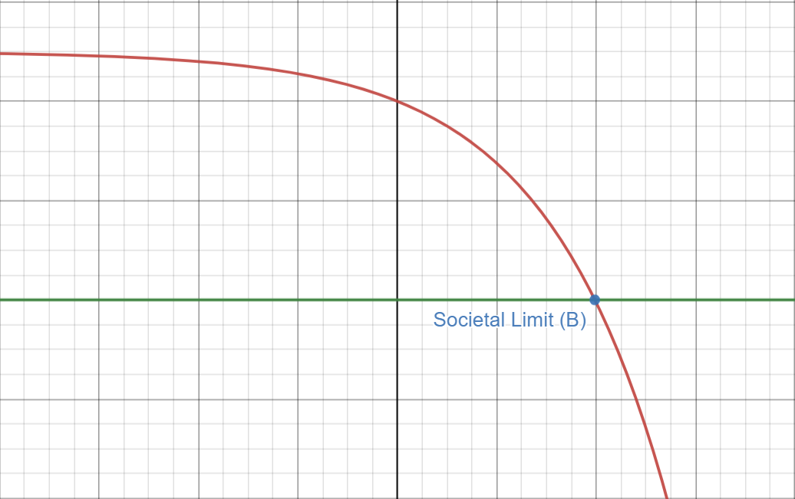

Extract from an essay by Neal Foster, written in 2020 and published on his blog.
Having outlined the possibility of failures within a complex interlocking system under severe external pressure leading to other, correlated failures—in particular through the example of the 2008 subprime mortgage crisis—let me now move on to my thesis. If we accept the margin of error for social fluctuations to be of a given range in the y-axis and the x-axis to be time, there comes a point B past which we exceed this margin of error, and society’s ability to self-correct collapses leading to each failure producing ever-more compound failures. I call this point B the Societal Limit. Let us model the progress of societal collapse then as a negative exponential function (e.g. -(a^x)+c) instead of as a negative affine function (e.g. -ax+c): Under this function, once society pasts point B exits the margin of acceptable failure recovery becomes ever more difficult and requires ever more coordinated deployment of resources, deployments which are themselves hampered by the existing failures within the system. By this logic, if we do not stop ourselves before the cliff’s edge we are certainly doomed to plummet off of it.

(Fig C.) The red line shows an inverse exponential function that tracks the collapse of social functions under external pressure, the green the marginal lower bound of recovery from these collapses, and point B the Societal Limit after which point failures begin accumulating beyond the ability of society to respond due to compounding systemic breakdown.